Navigasi & Passing Data
(Navigator, Konsep Stack, dan Constructor)
Dibuat : Oktober 2026
Repository GitHub
Praktikum ini merupakan kelanjutan dari Praktikum 3, di mana aplikasi pencatatan
transaksi keuangan yang sebelumnya hanya terdiri dari satu layar kini dikembangkan
menjadi aplikasi multi-layar. Kemampuan berpindah antar halaman adalah fondasi dari
hampir semua aplikasi mobile modern, dan Flutter menyediakan sistem navigasi berbasis
tumpukan (stack) melalui widget Navigator.
Pada praktikum ini dibangun tiga layar utama: DashboardScreen sebagai
halaman utama, AddTransactionScreen sebagai form pencatatan (dari
Praktikum 3), dan TransactionDetailScreen sebagai halaman baru yang
menampilkan rincian sebuah transaksi. Konsep utama yang dipelajari adalah cara
mengirim data antar layar melalui Constructor, serta cara membuka
(Navigator.push) dan menutup (Navigator.pop) halaman secara
terprogram.
Navigator.push untuk berpindah ke layar baru.Navigator.pop untuk menutup layar dan kembali ke halaman
sebelumnya.String dan int antar layar
menggunakan Constructor.showDatePicker sebagai tugas
praktikum.Navigator adalah
widget
bawaan Flutter yang bertugas mengelola tumpukan ini.
Push berarti meletakkan kartu baru di atas tumpukan
(membuka halaman baru), sedangkan Pop berarti mengambil
kartu teratas dan membuangnya (menutup halaman, kembali ke halaman
sebelumnya).
Konsep ini membuat alur navigasi mudah diprediksi dan konsisten.
Navigator.push(context, route) adalah perintah untuk membuka
halaman baru. Parameter route umumnya diisi dengan
MaterialPageRoute, yang menyediakan animasi transisi bawaan
Material Design (slide dari kanan). Di dalam MaterialPageRoute,
properti builder menerima fungsi yang mengembalikan widget
halaman tujuan. Saat push dipanggil, Flutter secara otomatis
menambahkan tombol "Panah Kiri" (back button) di AppBar halaman
baru.
Navigator.pop(context) menutup halaman yang sedang aktif dan
kembali ke halaman sebelumnya di tumpukan. Metode ini biasanya dipanggil
secara programatik, misalnya setelah pengguna menekan tombol "Simpan" dan
form berhasil divalidasi, sehingga aplikasi otomatis kembali ke Dashboard
tanpa pengguna harus menekan tombol back secara manual. Selain itu,
Navigator.pop juga bisa menyertakan nilai kembalian yang dapat
dibaca oleh halaman pemanggil.
final sebagai penampung data, lalu
mendeklarasikan Constructor dengan parameter required untuk
mewajibkan data tersebut diisi saat halaman dipanggil. Ketika Halaman A
membuka Halaman B via Navigator.push, data disisipkan langsung
sebagai argumen konstruktor — mirip seperti menitipkan pesan di dalam
amplop yang diberikan saat berpindah ruangan.
ListTile adalah widget Flutter yang dirancang khusus untuk
menampilkan satu baris informasi dengan tata letak standar: ikon di kiri
(leading), judul dan subjudul di tengah, serta widget
pendukung di kanan (trailing). Properti onTap
memungkinkan seluruh area baris tersebut menjadi interaktif — saat
pengguna mengetuknya, fungsi yang ada di dalamnya dijalankan. Inilah yang
dimanfaatkan untuk memicu Navigator.push sekaligus mengirim
data spesifik baris yang diklik ke halaman detail.
Proyek Praktikum 4 disusun menjadi 4 file terpisah di dalam folder
lib/, mensimulasikan arsitektur aplikasi nyata yang terstruktur dan mudah
maintenance.
A. Entry Point & Konfigurasi Tema
(main.dart)
File main.dart berfungsi sebagai titik awal aplikasi.
Perbedaan utama dari Praktikum 3 adalah tema warna diubah dari
Colors.deepPurple menjadi Colors.red sesuai panduan modul,
dan halaman pertama yang dimuat bukan form transaksi melainkan
DashboardScreen sebagai dashboard utama aplikasi.
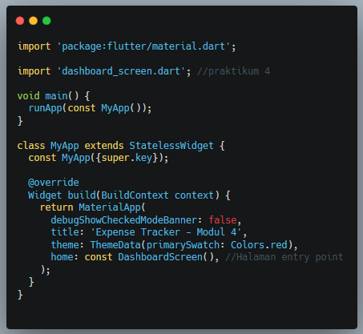
B. Halaman Dashboard
(dashboard_screen.dart)
Dashboard merupakan halaman utama yang ditampilkan saat aplikasi dibuka. Halaman ini menggabungkan elemen UI dari modul sebelumnya (kartu saldo dan daftar transaksi), dan kini seluruh elemennya sudah dihubungkan dengan sistem navigasi.
1. Struktur Scaffold & FloatingActionButton
Scaffold pada Dashboard dengan tambahan properti
floatingActionButton yang menampilkan tombol + merah di
pojok kanan bawah. Saat ditekan, tombol akan memanggil Navigator.push
yang membuka halaman baru AddTransactionScreen dimana pengguna dapat
mencatat transaksi baru.
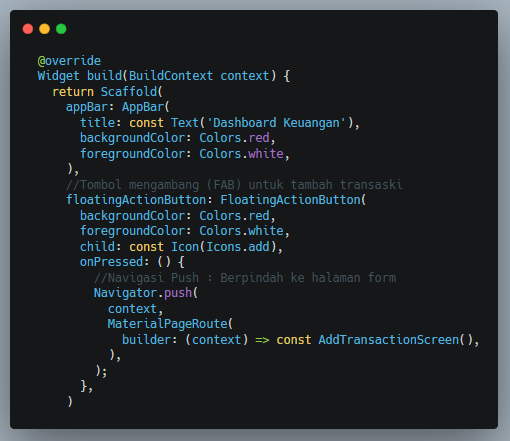
2. Widget Kartu Saldo
Method _buildBalanceCard() mengembalikan widget Card dengan
warna Colors.redAccent yang menampilkan saldo utama pengguna. Widget ini
bersifat statis dan datanya hardcoded sebagai demonstrasi tata letak.
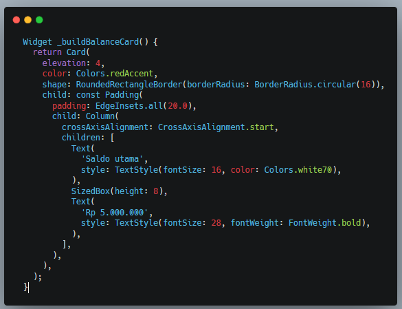
3. Daftar Transaksi dengan onTap (Passing Data)
Method _buildTransactionList(BuildContext context) menerima
context sebagai parameter karena di dalamnya terdapat pemanggilan
Navigator.push. Setiap ListTile dilengkapi properti
onTap yang saat diketuk akan membuka TransactionDetailScreen
sambil menyertakan data spesifik baris tersebut (judul, nominal, kategori, dan
tanggal) melalui Constructor.
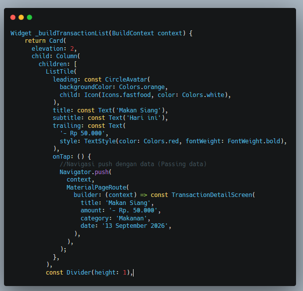
C. Form Tambah Transaksi dengan
Navigator.pop
(add_transaction_screen.dart)
File ini pengembangan dari Praktikum 3. Perubahan pada
ElevatedButton, dimana setelah validasi berhasil dan
SnackBar ditampilkan, kini ditambahkan
Navigator.pop(context) agar form otomatis tertutup dan pengguna kembali
ke Dashboard — tanpa harus menekan tombol back secara manual.
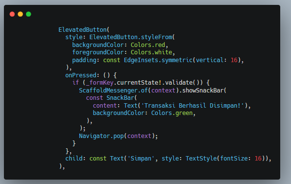
D. Halaman Detail Transaksi
(detail_transaction_screen.dart)
Ini adalah halaman baru yang dibuat di Praktikum 4. Halaman ini
menggunakan StatelessWidget karena tidak perlu menyimpan state apapun,
tugasnya hanya menampilkan data yang diterima dari Dashboard.
1. Deklarasi Variabel & Constructor
Empat variabel final dideklarasikan untuk menampung data yang dikirim:
title, amount, category, dan
date. Semua variabel ini wajib diisi saat halaman dipanggil,
ditandai dengan kata kunci required pada Constructor. Jika salah satu
tidak disertakan, Flutter akan langsung memberikan error saat kompilasi, bukan saat
runtime, agar kode lebih aman.
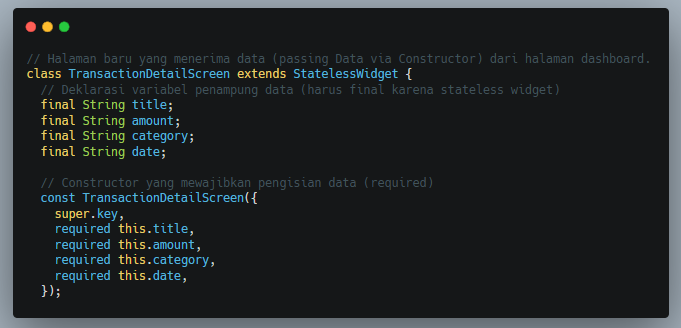
2. Tampilan UI Detail
Layout halaman detail disusun secara vertikal menggunakan Column.
Terdapat ikon receipt_long besar di atas sebagai penanda visual, diikuti
judul dan nominal dalam ukuran font besar, lalu garis pemisah
(Divider), dan baris-baris detail (kategori, tanggal, status)
yang dirender oleh method pembantu _buildDetailRow() agar kode
tetap rapi dan tidak berulang.
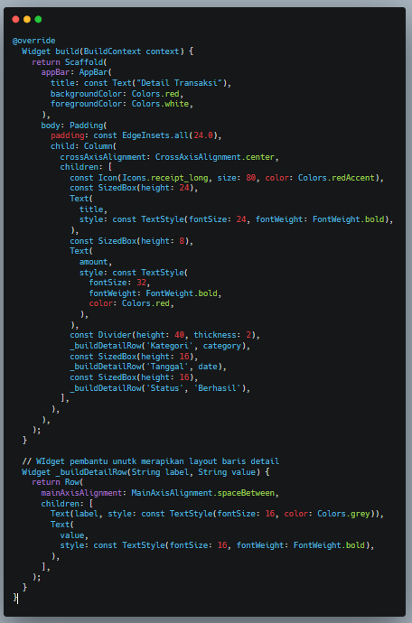
E. Tugas Praktikum – Input Tanggal
(showDatePicker)
Tugas praktikum adalah menambahkan field input tanggal di
AddTransactionScreen sebelum tombol Simpan, menggunakan
showDatePicker yang sudah dipelajari di Praktikum 3.
1. Deklarasi Controller & Fungsi
_selectDate()
Tambahkan TextEditingController baru bernama
_dateController dan jangan lupa memanggil .dispose()-nya.
Fungsi _selectDate() bersifat async dan memanggil
showDatePicker dengan batasan tahun 2000–2100. Tanggal yang dipilih
pengguna diformat menjadi DD/MM/YYYY menggunakan
padLeft(2, '0') agar angka hari dan bulan selalu dua digit.
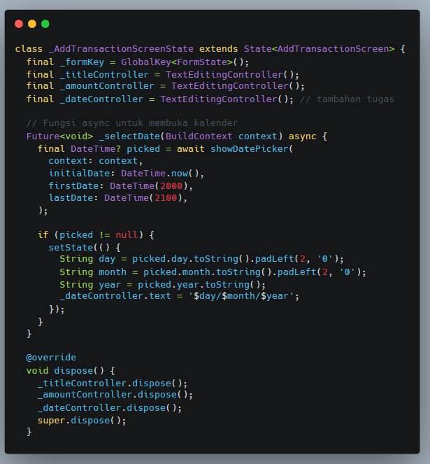
2. Field Tanggal readOnly
TextFormField untuk tanggal dikonfigurasi dengan
readOnly: true agar pengguna tidak dapat mengetik langsung —
input hanya boleh berasal dari dialog kalender. Properti onTap
dan suffixIcon keduanya memanggil _selectDate(context),
memberi dua cara berbeda untuk membuka kalender. Validator memastikan field ini
tidak bisa dikosongkan saat form dikirim.
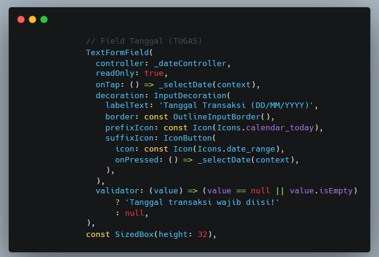
Aplikasi Praktikum 4 terdiri dari tiga layar yang terhubung satu sama lain:
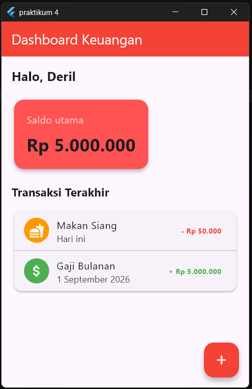
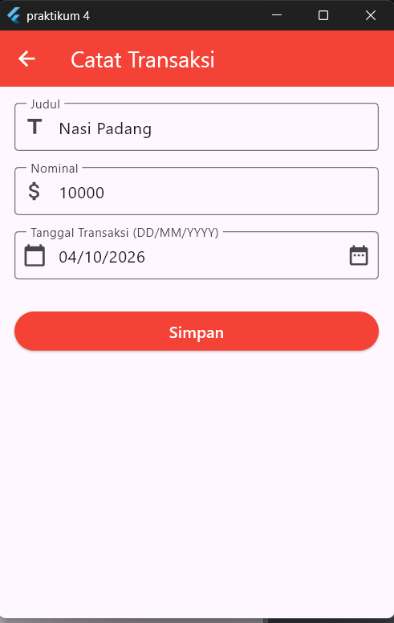
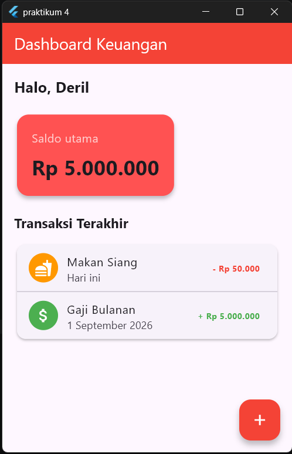
Melalui praktikum 4 ini berhasil mengembangkan dari awalnya aplikasi satu halaman dari Praktikum 3 menjadi aplikasi multi-halaman yang terstruktur, dengan navigasi dan perpindahan data antar halaman yang berfungsi dengan baik.
final dan kata kunci
required menjamin data selalu tersedia saat halaman dirender.
main.dart, dashboard_screen.dart,
add_transaction_screen.dart,
transaction_detail_screen.dart)
membuat proyek jauh lebih mudah dibaca, dipelihara, dan dikembangkan.
async/await dari Praktikum 3 sebagai field tanggal pada form,
pelengkap input data transaksi yang nyata.
Dengan menguasai navigasi dan passing data, sebagai fondasi untuk membangun aplikasi Flutter yang kompleks dan berlapis sudah terbentuk. Prinsip yang sama berlaku untuk aplikasi nyata dengan banyak halaman.